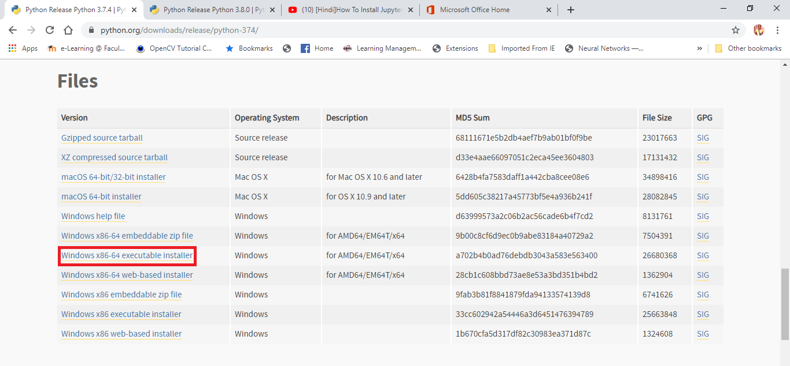
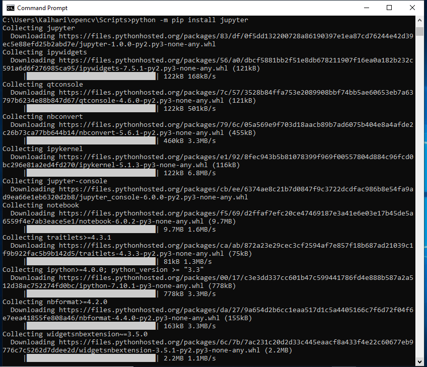

Windows¶
If you have not installed Python on Windows please follow this guide
Install Windows Python¶
Install Python from this URL: Python
Please use at least Python 3.7 or higher
Choose and select “x86–64 executable installer” for Windows 10–64 bit computer
Set “Python37” path and “Python37/Scripts” path to environment variable


PIP¶
pip is a de facto standard package-management system used to install and manage software packages written in Python. Many packages can be found in the default source for packages and their dependencies — Python Package Index (PyPI)
pip install inforion
code . . .
Jupyter Notebook to Windows 10¶
Install Jupyter using “python -m pip install jupyter”
Run Jupyter Notebook using “jupyter notebook”

Start the notebook server and popup dashboard in browser using “localhost:8888/tree” url